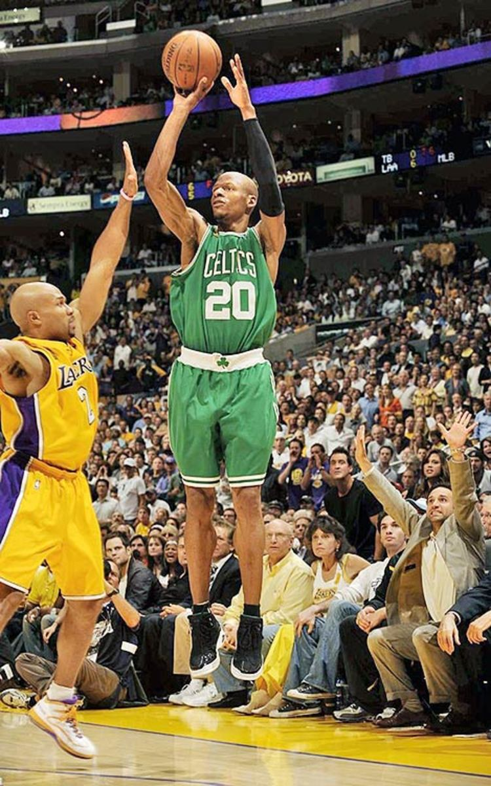

Music Writing Fitness Basketball
I enjoy making music, primarily hip-hop and jazz-hop. I've been making music, on and off, since 2007. I've performed at cultural events and colleges all around the Midwest.
Draggin' Nights
A Day in the Life
I enjoy making music because the writing process is therapeutic for me.
Home:Word
My hometown, I learned to love it when I left it, yes
I’m blessed that it appears to me like it had only been
Yesterday my heart reverberated with the El tracks
I take the Brown down, switch to Red on the way back
I pass the sax man at Jackson, the Pho spot on Broadway
Artwork on rooftops, the life that we embody
Night lights strung across the pieces of our city
Mixed in with the memories, Chicago’s roots embedded in me
The start of slam, the vision of movements
Progression of community through struggle of students
The basis for hip-hop and the strength of our wind
All collide and combine and create who I am from within
But even with my city always surging through my veins
Every time that I’m away I’m steady counting down the days
Right down to the second that I make it to my place
So yo lemme say
Tell you I’m used to being used to
Going through with the motions
Every time I’m away
Everyday my thoughts just drive me insane
Cuz I feel, you prefer the world beyond oceans
Looking out into space, to the place that’s always keeping my faith
Home, home is where the heart is
And it always feels the hardest when the distance spans the farthest
When the target of my dreams just feels farther than it seems
And it causes me to think whether or not this is for me
Every time I'm on the road, I reflect back through the mirrors
But the vision of my kin and loved ones appear unclearer
And fade out all the memories, fragments of my timeline
Just all collide and begin fading into the night skyline
I gotta get, get, gotta, gotta get home
Return to my ohana, back to my heart and my soul
I'm feeling so lost, I forgot the road goes
Now my goals are in the dark, I don't know them no mo'
I gotta get, get, gotta, gotta get home
Salutations to my fam cuz they made me possible
Aspirations that I'm chasing always keep me on the go
Gracing stages while they waiting til I finally come home
I work out 5-7x a week.
Current numbers
I started running in 2022. I finished my first marathon in 2024, with a time of 6:00:40. I am currently training for the Chicago Marathon 2025.
I fell in love with basketball in 2007. Prior to this, I did not follow any sport whatsoever, and the extent of my experience with sports was grade school recess activities. But one random day at the lunch table, my friend showed me this man.
Ray Allen was my introduction to the game of basketball. 3 point shooting became the one thing I wanted to do, and that's all I did when I played. To this day, my game is that of a 3 point shooter, and my favorite team remains the Boston Celtics.